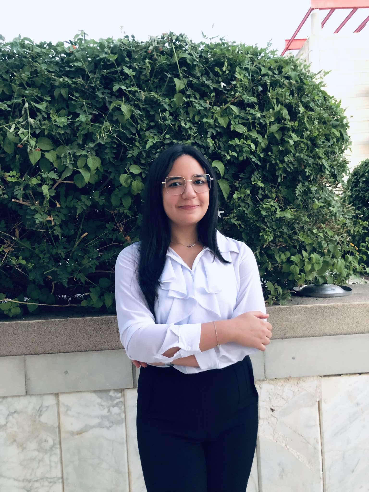

<div class="row align-items-center default-container">
    <div class="col-lg-8">
        <div class="content">
            <div class="content-left">
                <h2 class="default-topic">À propos de moi.</h2>
                <p class="default-p">
                    Je m'appelle Nada BENTAARIT et je suis passionnée par <span class="default-highlight">la création d'applications innovantes</span> qui répondent aux besoins des utilisateurs.
                </p>
                <p>
                    
                </p>
                <p class="default-p">
                    Développeuse web et mobile basée en Tunisie, je parle couramment l'arabe, le français et possède un bon niveau en anglais. Mon parcours en génie logiciel m'a permis de développer des compétences en programmation et en ingénierie logicielle, avec un accent particulier sur le développement web, le cloud, et DevOps.
                </p>
                <p class="default-p">J'ai commencé mon parcours en informatique en tant qu'étudiante en génie logiciel, ce qui m'a permis d'acquérir une solide base en <span class="default-highlight">développement de logiciels, logique de programmation et résolution de problèmes</span>. Au fil des années, j'ai eu l'opportunité de travailler sur divers projets et stages, me spécialisant dans le <span class="default-highlight">développement web et mobile</span> ainsi que dans l'intégration d'architectures cloud.
                </p>
                <p class="default-p">
                    J'ai eu le privilège de collaborer avec des équipes talentueuses sur des projets passionnants, que ce soit dans le développement de plateformes web interactives ou d'applications mobiles performantes.
                </p>
                <p class="default-p">
                    Mes expériences professionnelles m'ont permis de maîtriser <span class="default-highlight">plusieurs technologies</span>, allant de frameworks modernes pour le front-end et le back-end (ReactJS, Angular, Symfony, Spring Boot) aux outils de DevOps (Docker, Kubernetes, CI/CD), ainsi qu'au développement d'applications dans des environnements cloud comme AWS. Je suis motivée par la création de solutions robustes et évolutives qui répondent aux besoins des utilisateurs finaux.
                </p>


            </div>
            
            <div class="content">
                <div class="content-left">
                    <h2 class="default-topic">Me contacter.</h2>
                    <p class="default-p">
                        Suivez-moi sur les réseaux sociaux, consultez mon compte Github pour voir mes projets, ou <span class="default-highlight">contactez-moi pour discuter de collaborations potentielles</span>.
                    </p>
                    <button>
                        <a routerLink="/contact">
                            > Contactez-moi
                        </a>
                    </button>
                </div>
            </div>
        </div>
    </div>
</div>
